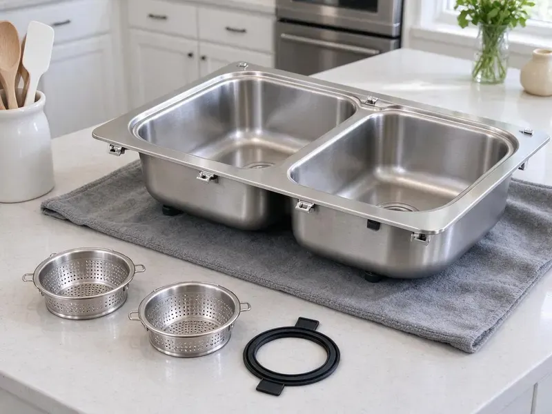

Kitchen Sink Installation in Casper, WY
Undermount on quartz, drop-in on laminate, or a 36-inch apron front. JKV Plumbing installs every common kitchen sink style in Casper, WY.
- Flat Install Price
- Install Day Set Around Your Counters
- Quick Install Scheduling
- New Traps and Strainers
Book a Kitchen Sink Install in Casper, WY
Send us the sink model and we will give you an installed price before the counters go in.
Kitchen Sink Installation in Casper, WY
JKV Plumbing handles the plumbing whether your new sink is a straight swap or part of a full remodel in Casper. A rushed install is where most leaks come from. We take the time to set the strainers in putty, align the trap without forcing it and test both bowls full.
Some of what we do:
- Double-bowl continuous waste plus disposal and dishwasher
- Strainer, trap and faucet hookups
- Quarter-turn stops and new supplies

Additional Kitchen Plumbing Services in Casper, WY
Our kitchen plumbing services in Casper, WY cover sinks, disposals, dishwashers, and grease traps so your kitchen keeps running without backups or leaks.


Customers
Why Choose JKV Plumbing for Kitchen Sink Installation in Casper, WY?
A new sink is only as good as the plumbing under it. We use brass stops and Schedule 40 traps. Cheaper thin-wall traps and plastic-nut supplies cost less up front, yet they are what we end up replacing most on repair calls.
- Heavy Sink Support, We build support frames for cast iron and fireclay farmhouse sinks.
- Local Experience, Our plumbers know the water pressure and piping common in Casper homes and plan each install around it.
- Solid Materials, Brass stops, braided supplies and Schedule 40 traps instead of bargain parts.
Citywide Coverage
From downtown condos to houses on the edge of town, our licensed plumbers install kitchen sinks across Casper. Condo jobs differ a bit. Many share a drain stack with the unit below, so we check the shutoff situation and building rules before we cut any water.
Experienced Team
Our team installs undermount, top-mount and apron-front models in stainless, composite, fireclay and cast iron. Each one plumbs differently. They keep up with new mounting systems and workstation accessories each year, since manufacturers change drain locations and clip designs often.
Safety-First Approach
Two people lift every heavy sink. We protect your counters with blankets and turn off the power before working near disposal wiring or an under-sink outlet. Then we test for leaks.
Trusted Certified Casper Plumbing Services Professionals
At JKV Plumbing, we take pride in licensed, certified plumbing services throughout Casper, WY. Those papers on the wall mean something. Every repair, install and maintenance visit follows strict safety and quality rules, and the plumbers doing the work carry recognized industry credentials.
Call Us Now PHCC Plumbing Contractor Recognition
PHCC Plumbing Contractor Recognition Better Business Bureau (BBB) Accreditation
Better Business Bureau (BBB) Accreditation Angi Certified Pro
Angi Certified Pro ISO 9001 Quality Management Certification
ISO 9001 Quality Management CertificationHow We Install Kitchen Sinks in Casper, WY: The Details
Apron-Front Sinks in Casper, WY
Apron sinks need a cabinet cut to fit the front panel, and the sink has to be in place before the counter is templated. We set the sink and frame early, so the fabricator measures from the actual bowl instead of a spec sheet. It prevents a crooked reveal. Cast iron versions can top 150 pounds, so we bring two people.

Drop-In Sink Replacement in Casper
Removing an old drop-in begins by slicing through the old caulk and backing off the clips from below. Old clips are often rusted solid, so we bring a reciprocating saw and cut them off rather than prying on the counter. Laminate edges chip easily. Your new rim has to fully cover the old hole.
New Construction Sink Rough-In in Casper, WY
The rough-in decides where the drain and valves end up long before the cabinets arrive. We usually set the kitchen drain stub around 16 to 20 inches off the floor, then adjust for deep bowls or a disposal so the trap does not end up below the wall outlet. Venting happens at this stage. Having the sink and faucet specs early saves moving pipe later.
Disposal and Dishwasher Hookup with Sink Installation in Casper, WY
Most new kitchen sinks get paired with a disposal and a dishwasher. We mount the disposal, run the dishwasher drain through an air gap or high loop and install a dedicated hot supply with its own shutoff. One visit costs less than three. We test it all the way you will use it.
Farmhouse Sink Installation in Casper, WY
A fireclay apron sink sits on a frame inside the cabinet, not on the countertop. We build that frame from 2x4s or a steel bracket, set the sink dead level and leave the right reveal for the stone shop. We plan the drain early. A lot of them drain toward the back, so the trap layout has to match.
Undermount Kitchen Sink Installation in Casper
Undermount sinks rely on clips and adhesive to stay attached to granite or quartz. We mount the bowl, seal the rim with silicone and brace it while the adhesive sets, which usually takes overnight before the sink can hold a full load of water. Then come the strainers and trap.
Granite and Quartz Composite Sinks in Casper
Composite sinks are heavier than stainless and usually thicker at the drain, so standard strainers sometimes need a longer threaded body. We check the strainer fit first. When the strainer is too short for the sink thickness, we replace it instead of cranking it down and chipping the drain opening.

Same-Day Sink Replacement in Casper, WY
A sink with a crack through the bowl or a strainer that has rusted out cannot be patched for long. We stock the most common double-bowl stainless sizes, so a same-day swap is often possible, and we replace the strainers and trap at the same time. We swap the old stops as well.
Kitchen Sink Installation Near Me in Casper, WY
Search for a nearby kitchen sink installer and you will find plenty of handymen. Our installers are licensed plumbers. That matters when the job turns into lowering a wall stub, replacing a seized stop or running a new dishwasher line, all of which a handyman cannot legally do in many places in Casper.
Looking for a kitchen sink installer near you in Casper, WY? JKV Plumbing has plumbers working the area every week, so scheduling around your countertop date is easy. Book once the counters are templated. It leaves us room to order an odd strainer or an extended drain kit ahead of install day.
JKV Plumbing at a Glance
- Fully licensed plumbing team covering Casper, WY
- 24/7 emergency service with same-day scheduling
- Clear written estimates, no hidden fees
- 4.9-star rated by 782+ Wyoming customers
Casper Map
Casper Information
- Population
- 58,720
- Area codes
- 307/406/435
- Service area
- Casper and communities within 40 miles
- Nearby
- Douglas, Rawlins, Riverton, Gillette
Many rural homes in Wyoming draw from private wells, and well water can carry sulfate, iron or other minerals that affect taste and fixtures. A new sink is the right time to swap old shutoff valves and drain stubs in Casper, WY kitchens.
Talk to a Plumber
Reach out to JKV Plumbing for honest, reliable plumbing from people who know the trade in Casper, WY.
Our Specialized Plumbing Services in Casper, WY
At JKV Plumbing, you get every kind of plumbing service from one company across Casper, WY. We go from leak detection all the way to full system installations, for homes and commercial buildings, and we do it quickly at a fair price. Here are the core services we offer:


How a Kitchen Sink Install Works in Casper, WY
Here is what a sink install looks like with JKV Plumbing, start to finish.
Call for a Price
Call (307) 393-4049 or use our form. Send the sink model and your countertop type and we will give you a clear installed price.
Prep the Space
We arrive on time, cover the counters and floor, shut off the stops and remove the old sink.
Set and Plumb
The new sink is set, sealed and clipped, then we connect the strainers, trap, faucet and any disposal.
Frequently Asked Questions About Kitchen Sink Installation in Casper
Most drop-in installs run $300 to $600 for labor. Undermount and farmhouse installs typically run $450 to $1,200, and adding a disposal or moving the drain adds another $150 to $600 depending on the work. The price is fixed up front.
An experienced DIYer can handle a simple drop-in. Undermount, farmhouse and double-bowl installs with disposals are more complex and much more likely to leak.
We see a lot of Kohler, Elkay, Moen, Blanco and Franke. We install most other brands too, and we read the install sheet for any sink we have not set before, since clip and drain specs vary between makers.
Most of the time the continuous waste has poor slope or layout, or the disposal outlet is pushing water back into the other bowl. We lay out the waste so both sides drain freely.
You can, if you have plumbing experience. Small mistakes cause most leaks. Too little putty under a strainer, a backward slip washer or a trap forced to meet a crooked stub will all drip, often for months unnoticed.
Not usually for a like-for-like swap. A new sink location or moved drain may need a permit, depending on the local building department.
Every install from JKV Plumbing comes with a labor warranty. The terms are in writing. Should a joint we made leak during the warranty period, we return and fix it, while the makers cover the sink and faucet themselves.
We install Kohler, Blanco, Elkay, Kraus, Franke, Ruvati and others. Bring your own sink or ask us for a recommendation.
What Our Customers Say About Our Plumbing Experts

Carlos V.
Our house still had galvanized pipe, and upstairs the shower was a trickle. The crew repiped everything in PEX over three days and patched every drywall hole before they left. The pressure difference is night and day.
Repiping · Riverton, WY
Angela D.
Our sump pump quit during a storm and the water was an inch from the basement carpet. JKV Plumbing put in a new pump with a battery backup that same evening. We have had two heavy rains since. It kicked on both times.
Sump Pump · Gillette, WY
Kevin O.
Before buying our house I paid for a sewer camera inspection. JKV Plumbing found a belly in the line that held standing water about forty feet from the cleanout. We used the video to get the sellers to fix it before closing.
Sewer Camera Inspection · Torrington, WYRobert G.
The camera showed a full break in our clay sewer line near the street. JKV Plumbing replaced it with a trenchless pipe burst, so the only digging was two small pits in the yard. They let us watch the footage before and after.
Sewer Line Replacement · Douglas, WY
Mark T.
The floor drain in our office break room backed up every few weeks. The plumber ran a cable, then put a camera down and found roots at a joint about thirty feet out. Seeing it on the screen made the decision easy.
Drain Cleaning · Douglas, WYGreg S.
I manage a small strip center with six tenants. JKV Plumbing handles our annual backflow testing and fixed a recurring clog in the shared sewer line that had been backing into the nail salon. Their reports come in clean and on time.
Commercial Plumbing · Casper, WY